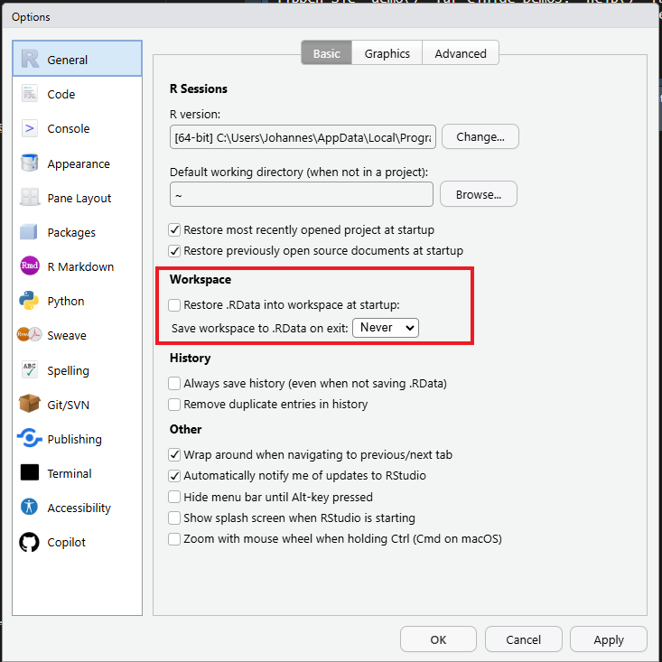
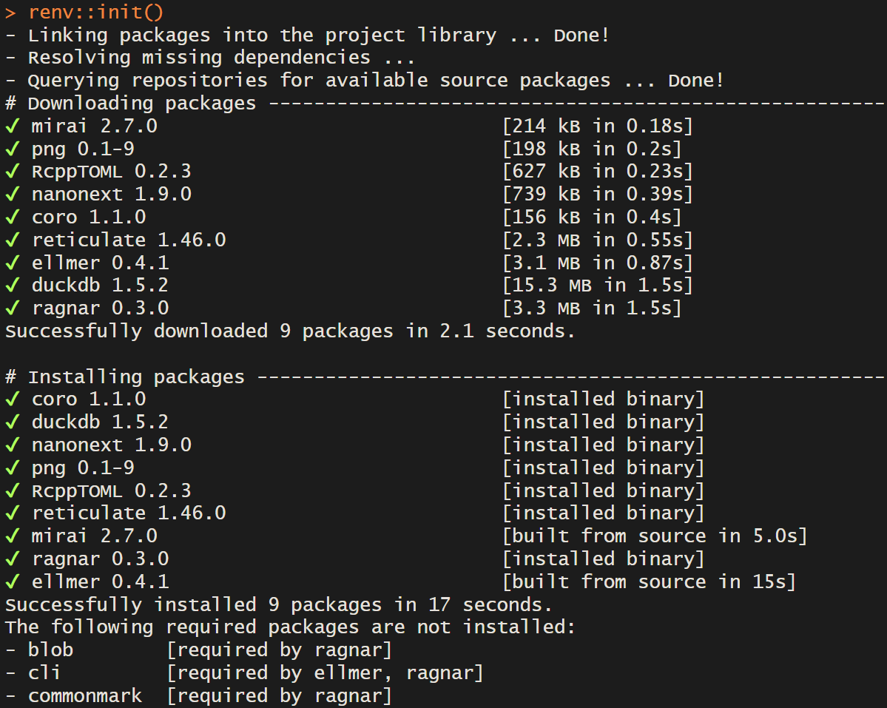

Reproducibility
I have to rerun an analysis a few years down the line…
My colleague wants to build on my analysis in a new study…
I want to publish the code used in my study together with the manuscript so others can use it…
A study is reproducible if it can be
Reproducibility =/= Replication
However, open methods and data are essential aspects for both.
Openly shared methods and data become valuable when we are given the same tools to work with as the authors.
Can I run my analysis tomorrow with the same results as today? Have I included all steps
For a fresh start: make restarting R a habit
Session Restart or Strg + Shift + F10
Do not rely on .RData to bail you out. Either save interim datasets to files or write your script in a way that lets you start from scratch every time.
Two options:
Change it in the RStudio options:

Use a function from the usethis package:
#| eval: false
usethis::use_blank_slate()Sharing your code and data is one step in the right direction.
To guarantee that others can apply them on their machine, you need to be able to share your computational environment.
What is meant by computational environment:
Specific packages and their version
version
operating system ( , , )
system dependencies
renv packagerenv is an R package that freezes and records the packages in your project in a project-specific library.
This way, your project becomes portable and reproducible as you can use it on another computer or share it with a colleague.
The project will not be affected by changing functionality or breaking changes in packages across versions.
A library is the place where packages are installed.
A library is the place where packages are installed. To check where your library is located, use .libPaths().
In a regular setup, all projects write to the same library. Therefore, packages can become out of sync with the projects that they have been used in.
Using renv
renv in an existing project
Console output after renv::init()
renv
The following project files are created by renv::init()
.
├── .Rprofile # Project-specific profile, activates renv
│
├── renv/
│ ├── .gitignore # Specify which files should be ignored by git
│ ├── activate.R # R script to launch renv
│ ├── library/ # Project library
│ └── settings.dcf # renv settings
│
└── renv.lock # the lockfile, containing package metadatarenv
Reproducibility can be achieved with the functions renv::snapshot() & renv::restore()
You
renv in the project with renv::init()
renv::install()**renv::snapshot()Other person/computer
renv::restore()renv::install()
renv::snapshot()
Outlook for further functionalities:
One easy step to get started:
#| eval: false
usethis::create_package("/path/to/the/package")| Col1 | Col2 |
|---|---|
| Document function | devtools::document() |
| Load all functions | devtools::load_all() |
| CMD Check | devtools::check() |
| Build package locally | devtools::build() |
| Declare dependencies | usethis::use_package() |
I have prepared a small script with these functions that you can download here script_package.R
I want you to
If the package is not intended for CRAN submission, superfluous information and files are created:
More info here
Further reading: (Happy Git and GitHub for the useR)[https://happygitwithr.com/]
The idea of a research compendium combines a number of the previously discussed features:
There are a number of R packages that implement research compendia: